Funabashi, Chiba: things to do, food and stays
Funabashi · Chiba
Funabashi
Highlighted on the Chiba map.
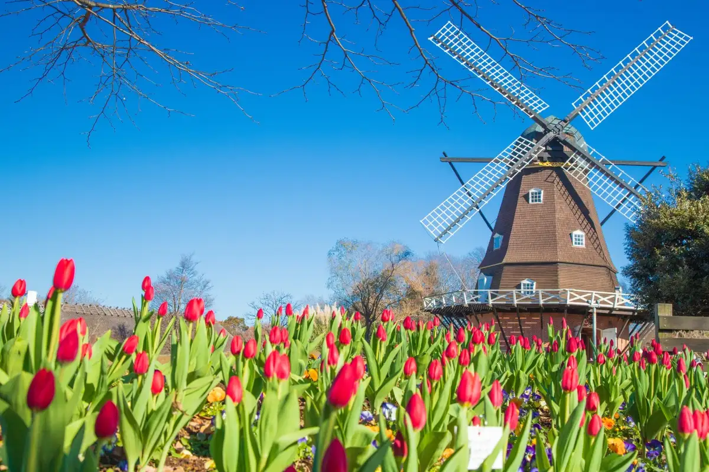
Stay
JR東日本ホテルメッツ 船橋
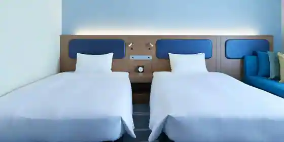
JR Higashinihon Hotel Mettsu Funabashi
クロス・ウェーブ船橋
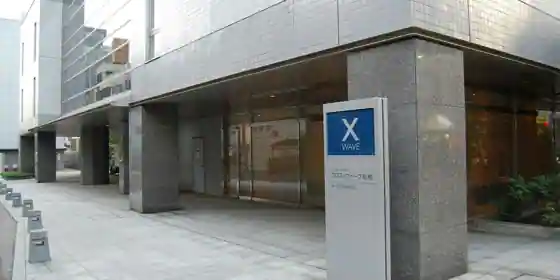
Kurosu Uebu Funabashi
Inn in Hon, Funabashi with a sauna and a large communal bath.
アパホテル〈西船橋駅前〉
APA Hotel < Nishifunabashieki Mae >
クインテッサホテル千葉船橋
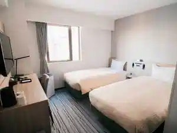
Kuintessa Hotel Chiba Funabashi
ホテル トレンド 船橋
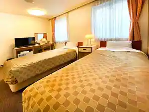
Hotel Torendo Funabashi
Hotel in Hon, Funabashi with business travelers.
ホテルシロー
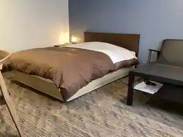
Hotel Shiro
レオ癒カプセルホテル 船橋店
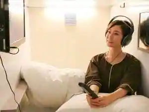
Reo Yu Kapuseru Hotel Funabashi
ホテル市松
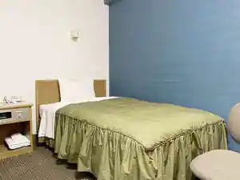
Hotel Ichimatsu
Hotel in Miyamoto, Funabashi with business travelers.
カナロア船橋
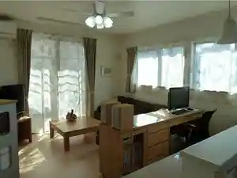
Kanaroa Funabashi
ホテルフローラ船橋
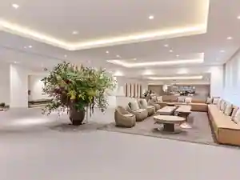
Hotel Furora Funabashi
Hotel in Hon, Funabashi; 5-minute walk from Abanparkrainfunabashi Station.
ダブル船橋
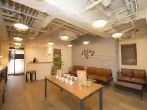
Daburu Funabashi
レオ癒カプセルホテル 西船橋店
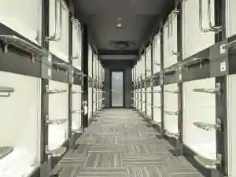
Reo Yu Kapuseru Hotel Nishifunabashi
Dining
とものもと
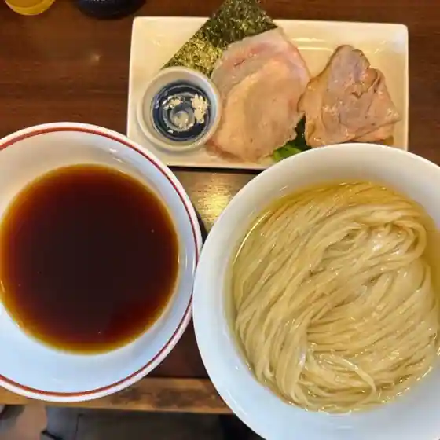
Tomonomoto
サールナート
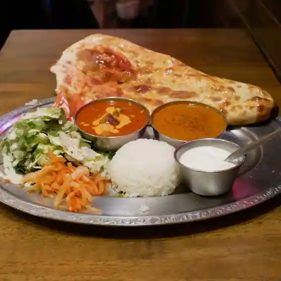
Sarunato
赤坂味一
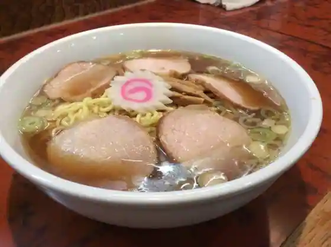
Akasaka Aji Ichi
とんかつ 栄ちゃん
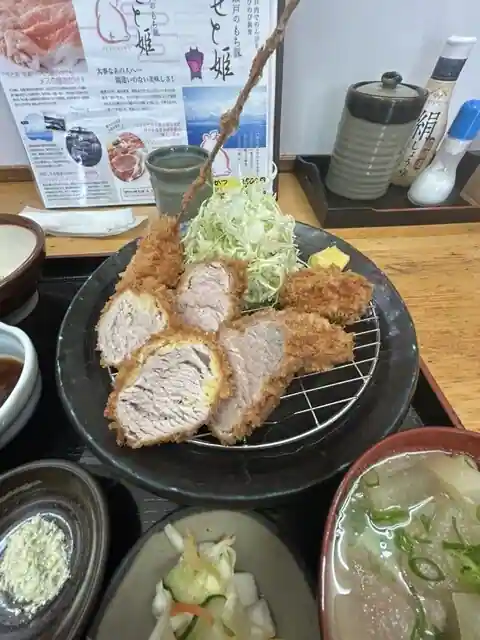
Tonkatsu Sakae Chan
もつ焼き独歩 本町店
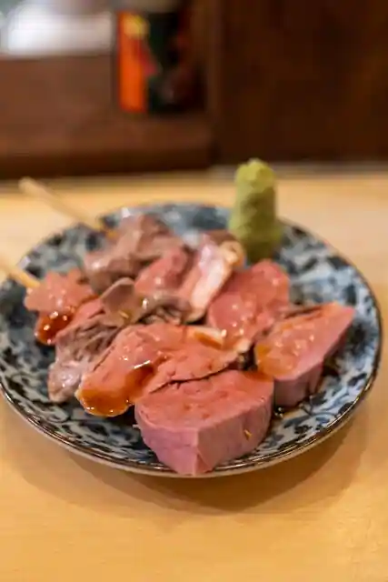
Motsu Yaki Doppo Honcho
おかめ寿司
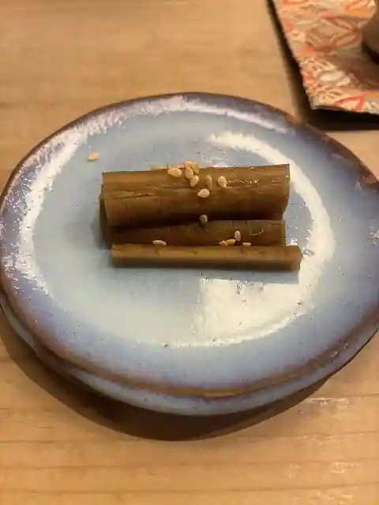
Okame Sushi
Boulangerie Queue
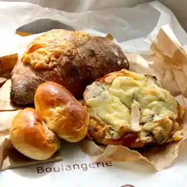
Boulangerie Queue
自家製麺ご藤
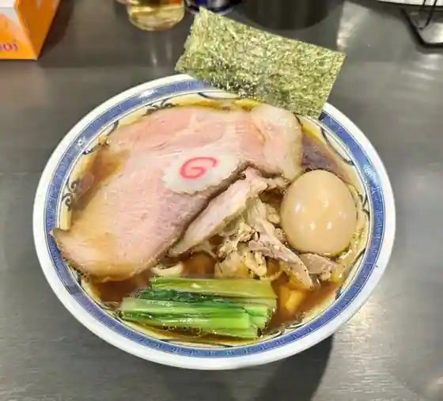
Jikasei Men Go Fuji
タイ料理レストラン きんめだい
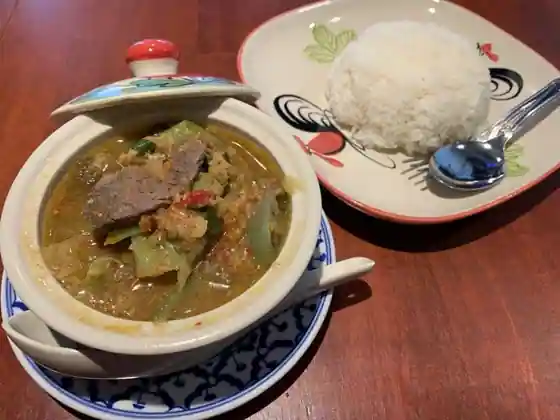
Tai Ryori Restaurant Kinmedai
中華蕎麦 きよし
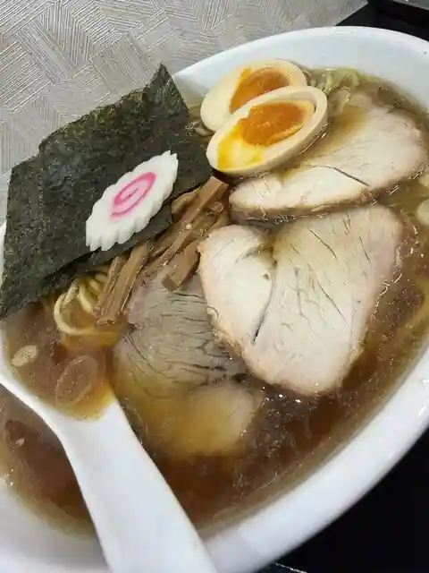
Chuka Soba Kiyoshi
松戸富田製麺 ららぽーとTOKYO-BAY店
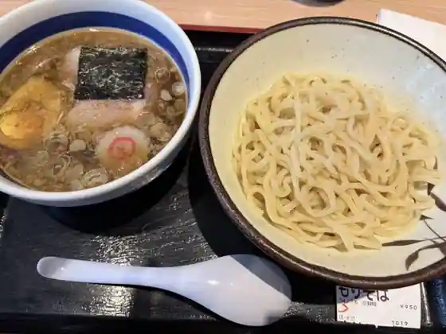
Matsudo Tomita Seimen Rarapoto TOKYO-BAY
かいざん 西船橋店
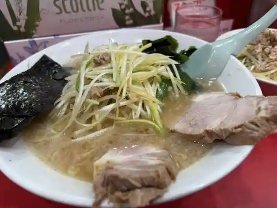
Kaizan Nishifunabashi
中華そば温故知新
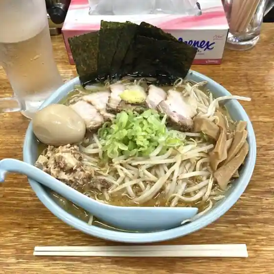
Chuka Soba Onkochishin
すし処ひしの木
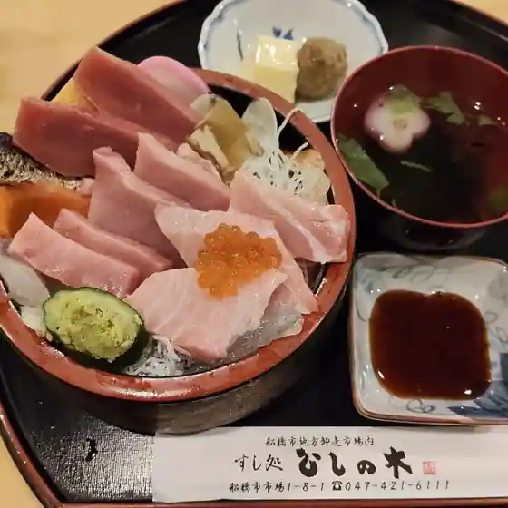
Sushi Tokoro Hishino Ki
ふなっ子
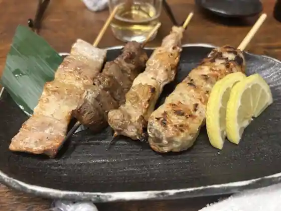
Funatsu Ko
照月苑
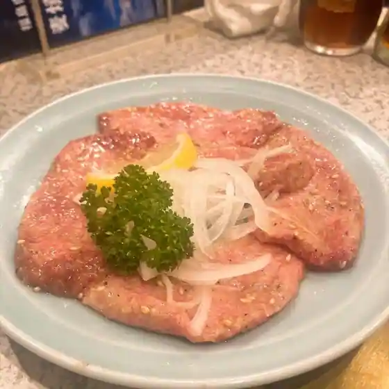
Sho Gatsu En
やきとり 鳥はし
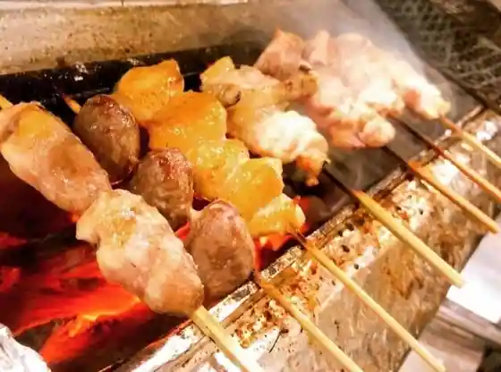
Yakitori Tori Hashi
L'enfant coeur et coeur
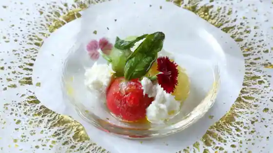
L'enfant coeur et coeur
拉麺いさりび
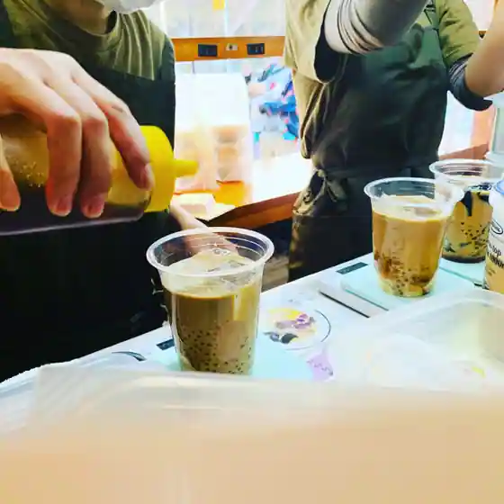
Ramen Isaribi
拉麺阿修羅
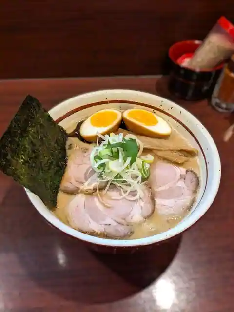
Ramen Ashura
大勝軒
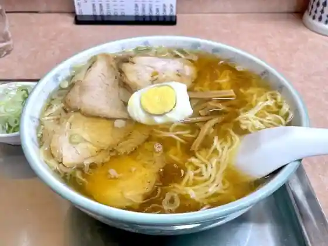
Taisho Ken
La Bonta
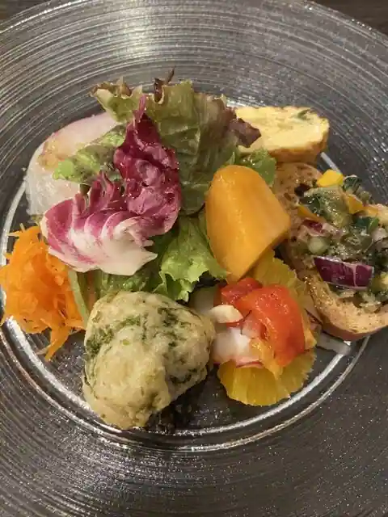
La Bonta
菓匠 白妙 習志野台本店
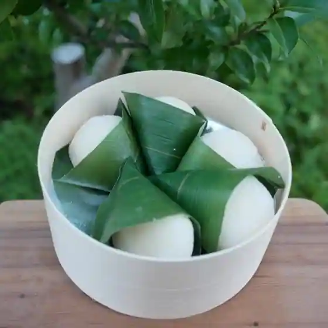
Kasho Shirotae Narashino Daihon
肉の匠 将泰庵 船橋本店
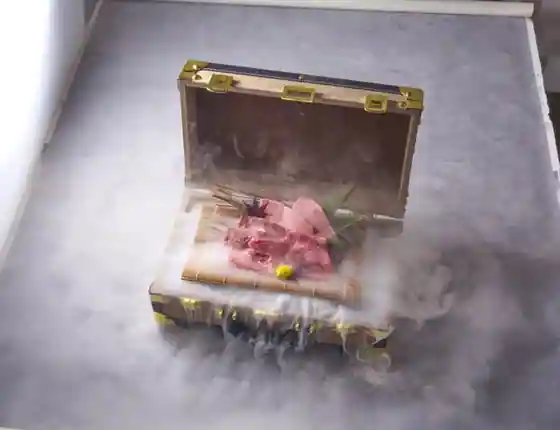
Niku No Takumi Sho Yasushi Iori Funabashi Hon
Sights
Funabashi Anderusen Park
Funabashi Dai Shrine (I Tomi Hi Shrine)
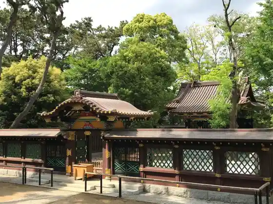
Shiohigari Ri / Funabashi Samban Se Seaside Park
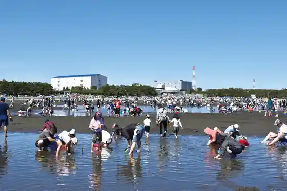
Funabashi Minato Shinsui Park
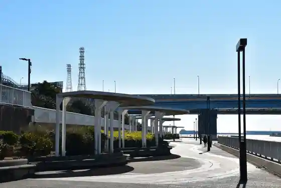
Funabashi Samban Se Seaside Park
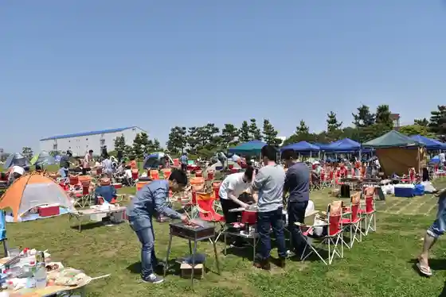
Sandaime no Nankyoku Kansoku Fune SHIRASE5002
Ebigawa Jogingurodo
Chiba Prefectural Funabashi Kenmin Forest
Funabashi Megusupa
Funabashi Samban Se Kankyo Gakushu Kan
Nosambutsu Chokubai Tokoro Funakko Hatake
Funabashi Tami Bunka Horu
Samban Se Minatoya
Ninomiya Shrine (Funabashi)
Hi no Dai Shiseki Koen Museum